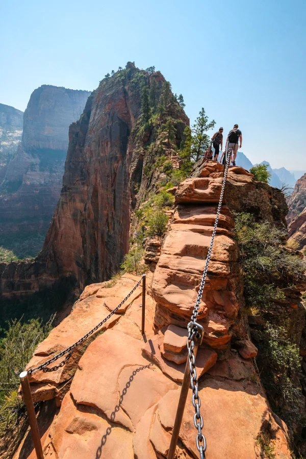

Zion
National Park
Zion is a canyon you walk through from the bottom rather than look down into from the rim. The Virgin River cut it out of Navajo sandstone, and the walls now stand nearly half a mile above the road on either side.
The hike I remember most is Angels Landing. The first stretch switchbacks up the canyon wall through a set of tight turns called Walter's Wiggles, and that part is only tiring. The last half mile is the part people talk about: a narrow fin of rock with long drops on both sides, where a chain bolted into the stone is the only thing to hold. Permits are now issued by lottery, so it has to be planned well ahead of the trip.
Terrifying is the honest word for it. I stopped twice on the chains and told myself I was fine looking at the rock in front of me and nothing else. Then you get to the top and the whole canyon opens up underneath you at once, and it is easily the best thing I have ever climbed to.
— Angels Landing summit, mid-morning
What to bring for Angels Landing
- At least three liters of water per person
- Shoes with real grip, not everyday sneakers
- Gloves for the chain section
- Your permit, printed or on your phone
- Sunscreen and a hat, since the ridge has no shade at all
- A small pack, so both hands stay free the whole way up
The three parks compared
| Park | State | Established | Size (acres) | Known for |
|---|---|---|---|---|
| Sequoia | California | 1890 | 404,064 | The largest trees on Earth |
| Zion | Utah | 1919 | 147,242 | Slot canyons and Angels Landing |
| Bryce Canyon | Utah | 1928 | 35,835 | Hoodoo rock spires |
Figures from the National Park Service.